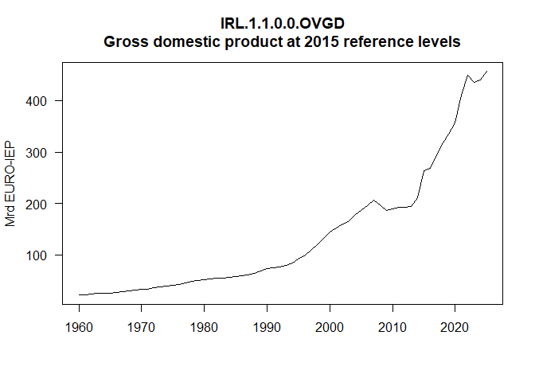
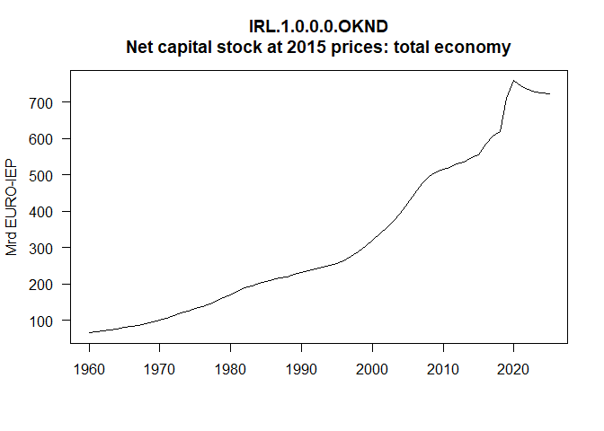
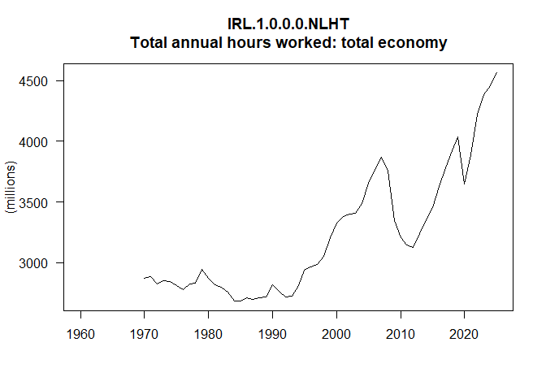
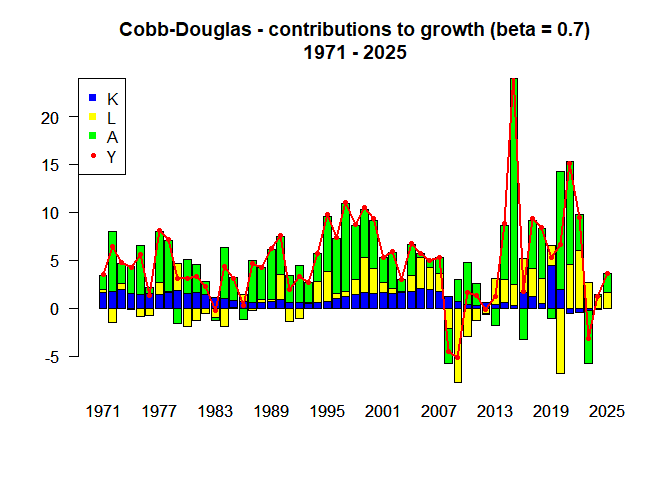

UNDER CONSTRUCTION - come back later…
The goal of pfdecomp is to decompose production functions into contributions to growth from each of the factors…
Installation
You can install the development version of pfdecomp from GitHub with:
# install.packages("pak")
pak::pak("xprimexinverse/pfdecomp")Example
This is a basic example which shows you how to perform growth accounting for Ireland using data from AMECO:

OKND <- get_series(AMECO_spring_2024, "IRL.1.0.0.0.OKND")
NLHT <- get_series(AMECO_spring_2024, "IRL.1.0.0.0.NLHT")
cd07 <- cobb_douglas(y = window(OVGD, start = 1970), k = window(OKND, start = 1970), l = window(NLHT, start = 1970), beta = 0.7, figure = FALSE)
cd07@contribs
#> Time Series:
#> Start = 1971
#> End = 2025
#> Frequency = 1
#> y_pc k_ctg l_ctg a_ctg
#> 1971 0.034698101 0.016505743 0.0028849417 0.015278549
#> 1972 0.064899468 0.017039607 -0.0146210032 0.062987124
#> 1973 0.047213815 0.019749563 0.0060990047 0.021154510
#> 1974 0.042600604 0.015456717 -0.0014600505 0.028506803
#> 1975 0.056568614 0.014165493 -0.0085063281 0.051001701
#> 1976 0.013498847 0.014943391 -0.0079625034 0.006856957
#> 1977 0.081209902 0.014567838 0.0126725703 0.052634725
#> 1978 0.071261181 0.016465752 0.0014747210 0.052674105
#> 1979 0.030526978 0.018611707 0.0284388968 -0.015738128
#> 1980 0.030561914 0.015423998 -0.0190119552 0.034934899
#> 1981 0.033056229 0.016688921 -0.0123835899 0.029192804
#> 1982 0.022640274 0.014242744 -0.0052362943 0.013823452
#> 1983 -0.002391222 0.010997777 -0.0095561961 -0.003566672
#> 1984 0.043390399 0.010159028 -0.0188398851 0.052936220
#> 1985 0.030997300 0.008020202 -0.0006752552 0.023560565
#> 1986 0.002896668 0.007161210 0.0073694516 -0.011449474
#> 1987 0.046631540 0.005918159 -0.0027609759 0.043398156
#> 1988 0.042661380 0.005562110 0.0030753743 0.033753806
#> 1989 0.062117677 0.007156456 0.0016390334 0.052907278
#> 1990 0.076380800 0.008621295 0.0266004792 0.039767417
#> 1991 0.019296023 0.006319399 -0.0140509857 0.027421615
#> 1992 0.033433188 0.006092020 -0.0111243463 0.038803063
#> 1993 0.026926048 0.004741098 0.0011391497 0.020943982
#> 1994 0.057558731 0.005596473 0.0227642214 0.028412498
#> 1995 0.098058351 0.007259250 0.0313921355 0.057240359
#> 1996 0.073796762 0.009678305 0.0055835062 0.057718173
#> 1997 0.110217868 0.012161609 0.0050438031 0.091561225
#> 1998 0.087660514 0.014253792 0.0156242281 0.056172083
#> 1999 0.105299499 0.016247305 0.0364518456 0.049967555
#> 2000 0.094035193 0.015786736 0.0257176787 0.050462951
#> 2001 0.053057844 0.015917874 0.0110271524 0.025568427
#> 2002 0.058993537 0.015765737 0.0046665369 0.038006945
#> 2003 0.030140860 0.016302808 0.0015121519 0.012385846
#> 2004 0.067884877 0.017561187 0.0165298555 0.032802337
#> 2005 0.057395642 0.020113094 0.0328761286 0.004222819
#> 2006 0.049878374 0.019591793 0.0226847994 0.007397954
#> 2007 0.053101191 0.017817228 0.0185194395 0.016283588
#> 2008 -0.044840622 0.012749724 -0.0206384093 -0.036723257
#> 2009 -0.050958024 0.007457179 -0.0770349127 0.022187202
#> 2010 0.016829748 0.003544849 -0.0295461294 0.044306920
#> 2011 0.012807448 0.003125139 -0.0124641946 0.022441763
#> 2012 -0.001297067 0.005564876 -0.0051911845 -0.001599991
#> 2013 0.011746495 0.003924236 0.0268869003 -0.018432154
#> 2014 0.088290150 0.006488746 0.0232306716 0.056894306
#> 2015 0.244752100 0.003272006 0.0216539562 0.214528966
#> 2016 0.017655711 0.016607443 0.0357929626 -0.033013075
#> 2017 0.093112599 0.011958715 0.0292959458 0.049803722
#> 2018 0.084702871 0.005313068 0.0257652828 0.052046275
#> 2019 0.052977289 0.045084570 0.0208508800 -0.010867336
#> 2020 0.066172045 0.020068426 -0.0676379028 0.122750775
#> 2021 0.151252255 -0.005419781 0.0459229214 0.107206578
#> 2022 0.094330063 -0.004140347 0.0600871074 0.037345089
#> 2023 -0.031987877 -0.002543059 0.0267918075 -0.054695876
#> 2024 0.012437125 -0.001636699 0.0124557741 0.001656718
#> 2025 0.035927766 -0.000476094 0.0160230717 0.020131409
cd07@avg_gr
#> Y A K L
#> Average growth rate 0.0505068 0.03297548 0.01098335 0.006388099